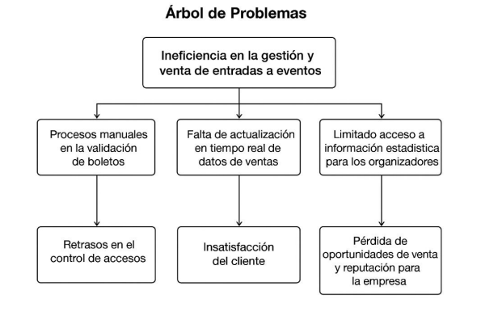

Árbol de Problemas
Problema Central:
Ineficiencia en la gestión y venta de entradas a eventos
Ineficiencia en la gestión y venta de entradas a eventos
Causas Principales
- Procesos manuales en la validación de boletos en puerta.
- Falta de actualización en tiempo real del aforo y estado de ventas.
- Limitado acceso a reportes estadísticos detallados para organizadores.
- Escasa automatización en la gestión de reembolsos y cambios.
- Comunicación deficiente entre plataforma, organizadores y clientes.
- Dependencia de personal físico en puntos de venta y control de acceso.
Efectos Principales
- Retrasos y aglomeraciones en el ingreso a eventos.
- Insatisfacción y quejas frecuentes de los asistentes.
- Pérdida de ingresos por errores en control de aforo.
- Dificultad para tomar decisiones rápidas por parte de organizadores.
- Riesgo de fraude y reventa no controlada.
- Imagen negativa de la plataforma ante eventos de alta demanda.
Representación gráfica del Árbol de Problemas
El árbol de problemas permite visualizar claramente las relaciones causa-efecto del problema central, sirviendo como base fundamental para la formulación de objetivos y el diseño de soluciones efectivas.